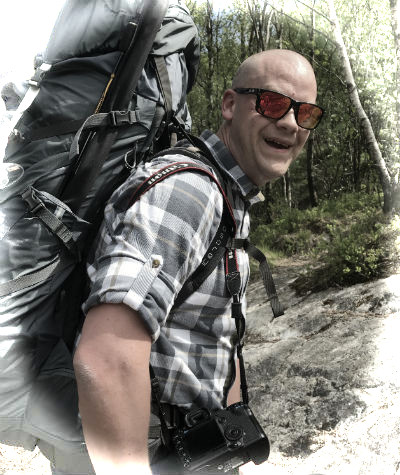

|  | Anders Rene AarreAutomation Engineer and Head Brewer at Trones Kjellerbryggeri I am an automation engineer working with process control and safety systems for offshore oil production platforms. My main hobby is brewing beer. This is done in my own "cellar"-brewery(it is no longer in a cellar). This webpage is made as part of a course, where i hope to learn html, css and javascript For my full CV, please contact me. |
| Dates | Work |
| Jan 2020 - Current | Automation Engineer in the Gudrun Phase 2 project, in Aibel |
| Mar 2019 - Dec 2019 | Engineering Manager in the Ula Power Project, in Aker Solutions |
| Jan 2018 - Dec 2019 | RRE for the control system upgrade in the Ula Power Project in Aker Solutions |
| Apr 2015 - Dec 2017 | BP CAT C FEL Team Lead, and Study Manager for CAT C FEL |
| May 2013 - Mar 2015 | Senior SAS/Instrument engineer in Aker Solutions |
| Sep 2010 - May 2012 | SAS Package Responsible Engineer in Aker Solutions |
| Feb 2009 - Sep 2010 | ABB Senior @ BP Ula |
| Jun 2006 - Feb 2009 | ABB Project Engineer |
Hobbies
|